{% extends "nav.html" %}
{% block title %}Index{% endblock %}
{% block head %}
{{ super() }}
{% endblock %}
{% block content %}
10 ที่เที่ยวหน้าหนาวยอดฮิตของภาคเหนือ...ที่ไปแล้วจะหนาว
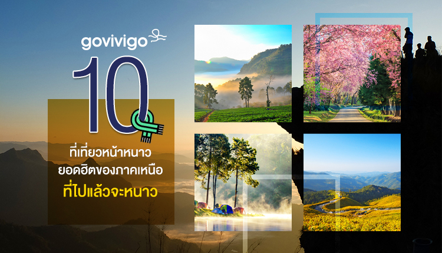
1. ดอยอินทนนท์, เชียงใหม่ (Doi Inthanon National Park, Chiang Mai)
ฮิตทุกปี ฮิตตลอด ลมหนาวมาเมื่อไหร่ดอยอินทนนท์ไม่เคยขาดนักท่องเที่ยว เพราะเป็นจุดสูงสุดแดนสยามพูดได้ว่าถ้าเข้าช่วงธันวาคม-มกราคม
ก็หนาวแน่นอน ใครโชคดีไปเที่ยวตอนอากาศเย็นได้ที่ก็จะได้เห็นยอดน้ำค้างแข็งอีกด้วย ดอยอินทนนท์ไม่ได้มีเพียงป้ายสูงสุดแดนสยามเท่านั้นที่
ทำให้ฮิต บริเวณนี้ยังมีสถานที่ท่องเที่ยวอีกหลายแห่งที่ต้องไป เช่น พระธาตุนภเมทนีดลและพระธาตุนภพลภูมิสิริ, น้ำตกวชิรธาร, น้ำตกแม่ยะ,
น้ำตกสิริภูมิ, กิ่วแม่ปาน เป็นต้น
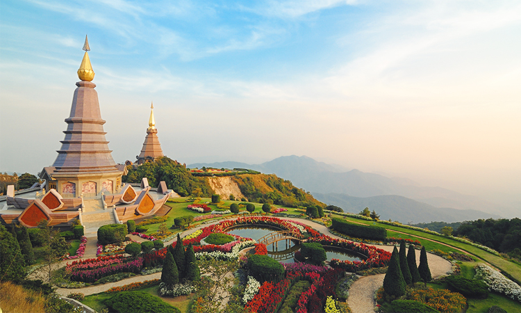
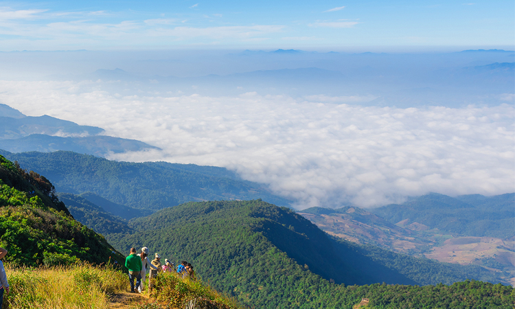
2. ดอยอ่างขาง, เชียงใหม่ (Doi Ang Khang, Chiang Mai)
ดอยอ่างขางไม่แปลกที่จะฮิตและมีคนมาเที่ยวกันล้นหลาม เพราะอุทยานแห่งชาติห้วยน้ำดังเป็นหนึ่งในจุดชมวิวทะเลหมอกที่สวยอันดับต้นๆ
ของไทยเลยทีเดียว แถมช่วงปลายฤดูหนาวยังมีดอกไม้หลากสีสันบานสวยอีกด้วย จุดชมวิวบริเวณห้วยน้ำดัง (ดอยกิ่วลม)
เป็นจุดชมวิวที่สวยงามและมีชื่อเสียงมาก เพราะจากจุดนี้เราสามารถมองเห็นดอยเชียงดาวได้ ใกล้ๆ กันยังมีจุดท่องเที่ยวอื่นๆ
เช่น น้ำตกห้วยน้ำดัง โป่งน้ำร้อนท่าปาย น้ำตกแม่เย็น เป็นต้น ที่พักของอุทยานแห่งชาติห้วยน้ำดังมีค่อนข้างจำกัด
ดังนั้นหากใครจะมาเที่ยวสามารถเลือกนอนพักที่ปายได้ซึ่งมีที่พักให้เลือกหลากหลาย ตอนเช้ามืดค่อยขับรถมาชมวิว
เพราะห้วยน้ำดังและปายอยู่ห่างกันไม่ได้มาก
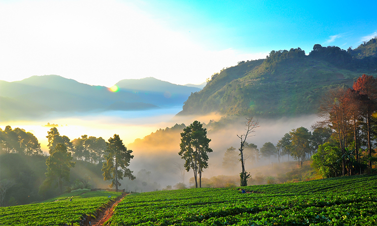
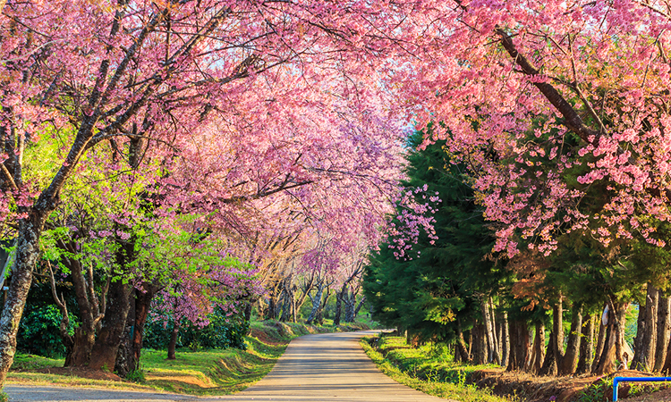
3. อุทยานแห่งชาติห้วยน้ำดัง, เชียงใหม่ (Huai Nam Dang National Park, Chiang Mai)
ดอยอ่างขางฮิตตีคู่มากับดอยอินทนนท์เลยทีเดียว เพราะทั้งหวานทั้งเย็นจนหลายๆ
คนยกให้เป็นสถานที่สุดโรแมนติกในช่วงหน้าหนาวกันเลย ในช่วงนี้แทบทั้งดอยจะอบอวลไปด้วยสีชมพูของดอกนางพญาเสือโคร่ง
และถ้าเข้าไปที่สถานีเกษตรหลวงอ่างขางก็จะเจอกับดอกไม้นานาชนิดที่ถูกจัดแต่งไว้อย่างสวยงาม ถ่ายรูปมุมไหนก็สวยไปหมด
หวานตาหวานใจแล้วก็ต่อด้วยหวานปาก บริเวณดอยอ่างขางมีไร่สตอเบอร์รี่หวานอร่อยและไร่ชาคุณภาพดีอีกด้วย
ถ้าอยากหาซื้อสามารถเข้าไปเลือกซื้อได้เลยที่ด้านในโครงการหลวง
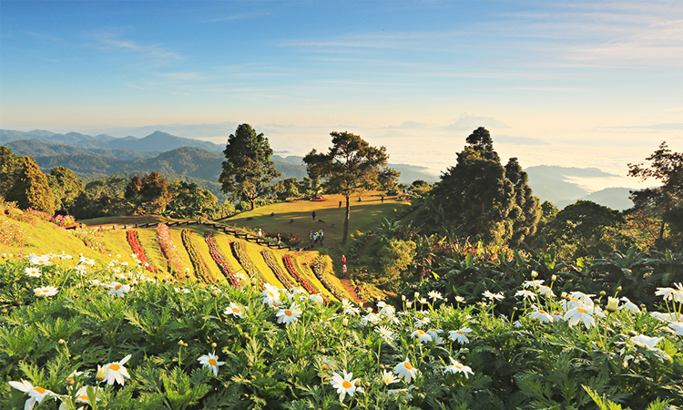
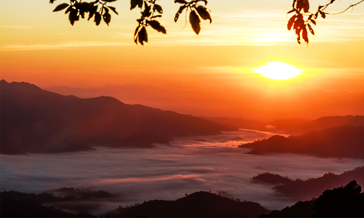
4. ภูชี้ฟ้า, เชียงราย (Phu Chi Fa, Chiang Rai)
ภูชี้ฟ้าเป็นหนึ่งในจุดชมวิวทะเลหมอกยอดฮิตในเชียงรายที่จะไม่ทำให้คุณผิดหวัง วิวสวยๆ ของทะเลหมอกสีขาวที่กว้างสุดลูกหูลูกตา
ภูเขาสลับซับซ้อนและอากาศหนาวๆ ที่ถ้าใครได้มาสัมผัสแล้วจะต้องอยากมาซ้ำอีกครั้งแน่นอน ที่นี่ไม่ได้มีดีที่ทะเลหมอกเท่านั้น
แต่ยังเป็นจุดถ่ายรูปพระอาทิตย์ขึ้นที่สวยที่สุดแห่งหนึ่งด้วยเช่นกัน
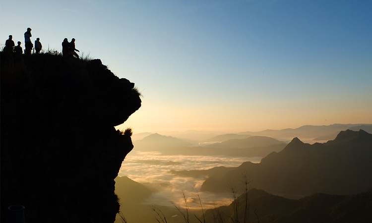
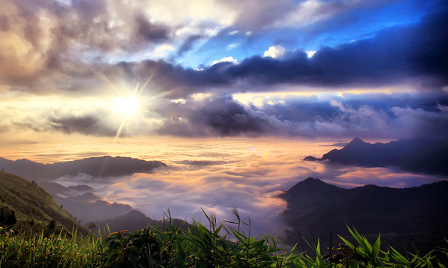
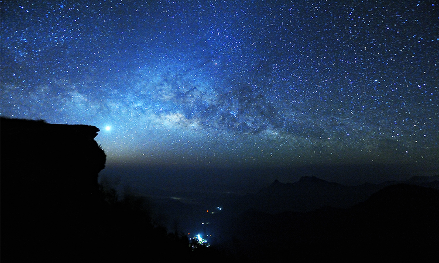
5. พระตำหนักดอยตุงและสวนแม่ฟ้าหลวง, เชียงราย (Doi Tung Royal Villa, Chiang Rai)
"พระตำหนักดอยตุง" หรือ "พระตำหนักสมเด็จย่า" ที่ปลูกสร้างขึ้นมาในกลิ่นอายล้านนาผสมผสานกับความเรียบง่าย
ไฮไลท์ของดอยตุงคือสามารถเยี่ยมชมห้องบรรทมและห้องทรงงานได้ (แต่ห้ามถ่ายรูปนะ)
อีกจุดคือบริเวณสวนแม่ฟ้าหลวงที่เต็มไปด้วยดอกไม้เมืองหนาวหลากสีสัน และยังมีร้านขายของที่ระลึก
ผลิตภัณฑ์จากโครงการหลวงอีกด้วย
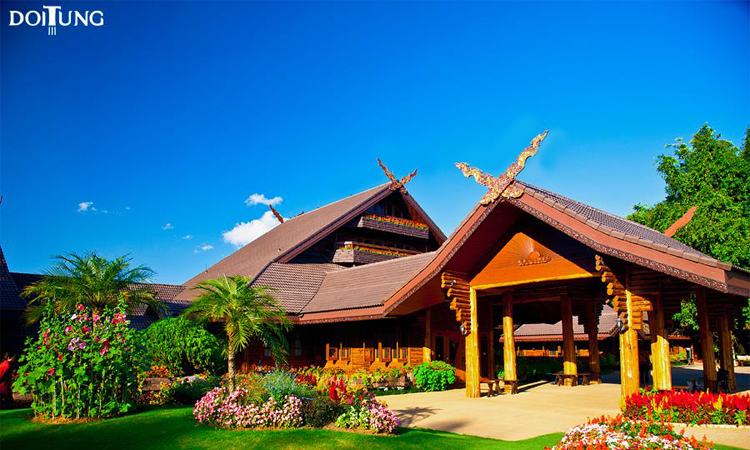
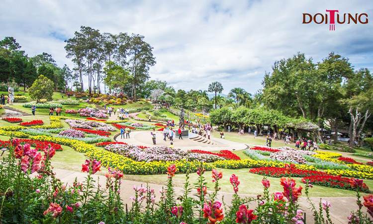
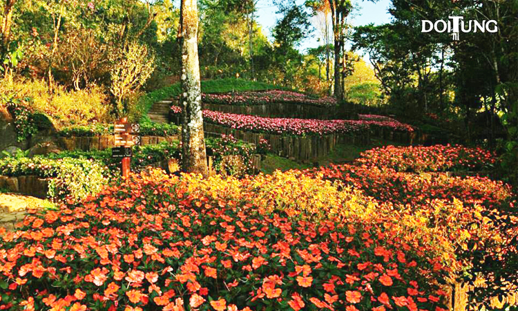
6. อุทยานแห่งชาติศรีน่าน, น่าน (Si Nan National Park, Nan)
ที่อุทยานแห่งชาติศรีน่านมีจุดชมทะเลหมอกยามเช้าที่สวยงามมากๆ ถึงสองจุด คือที่ดอยผาชู้และดอยเสมอดาว
ซึ่งดอยเสมอดาวนั้นเป็นหนึ่งในแหล่งท่องเที่ยวฮิตและมีชื่อเสียงมากแห่งหนึ่งในน่าน
ขึ้นชื่อเรื่องความสวยงามของธรรมชาติทั้งในตอนเช้าที่มีทะเลหมอกขาวๆ และตอนกลางคืนที่สามารถมองเห็นดาวเต็มท้องฟ้าได้อย่างเจน
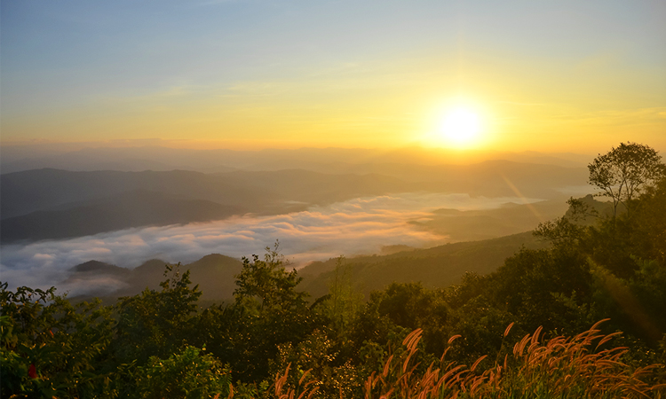
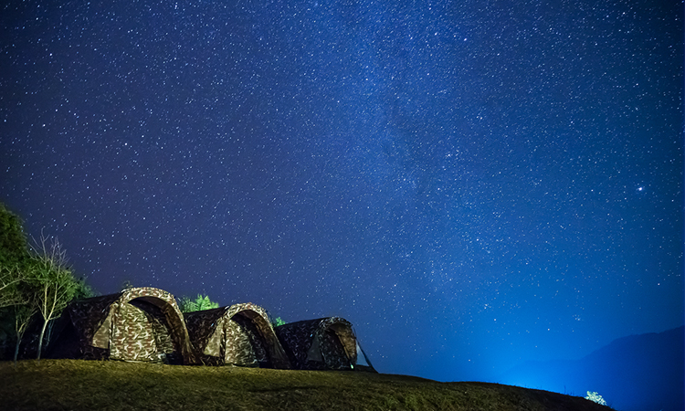
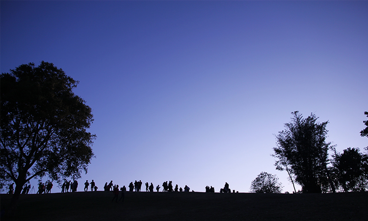
7. อุทยานแห่งชาติขุนสถาน, น่าน (Khun Sathan National Park, Nan)
อุทยานแห่งชาติขุนสถานในช่วงหน้าหนาวนั้นมีบรรยากาศดีและวิวสวยจนลืมเวลา นอกจากทะเลหมอกที่เป็นไฮไลท์หลักแล้ว
ถ้าโอกาสดีคุณอาจได้เห็นต้นนางพญาเสือโคร่งผลิดอกสีชมพูตลอดสองข้างทางอีกด้วย
บนอุทยานแห่งชาติขุนสถานมีบ้านพักและลานกางเต็นท์ให้บริการสำหรับคนที่อยากนอนค้างเสพบรรยากาศให้เต็มที่
ว่ากันว่าบ้านพักของอุทยานบนดอยแม่จอกนั้นมีวิวที่สวยมากๆ เพราะตั้งอยู่บนเนินเขา
จึงสามารถมองเห็นวิวได้จากเตียงนอนเลยทีเดียว
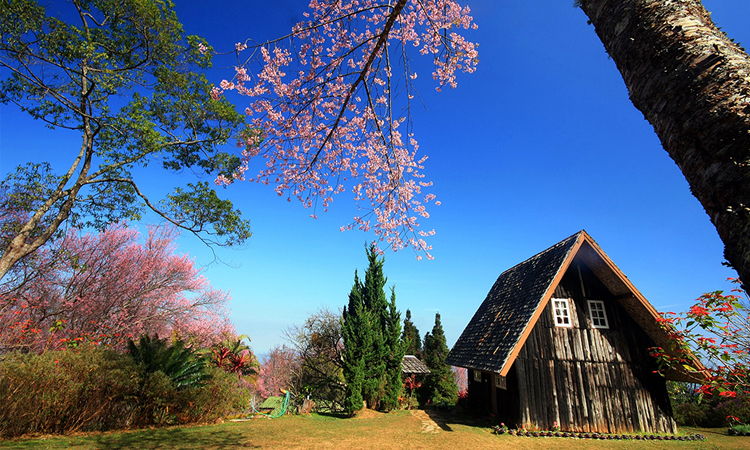
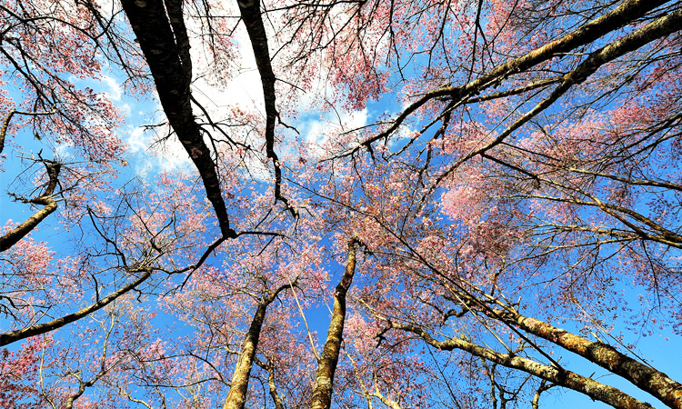
8. ปางอุ๋ง, แม่ฮ่องสอน (Pang Oung, Mae Hong Son)
ช่วงหน้าหนาวปางอุ๋งจะแน่นไปด้วยผู้คน ทั้งคนที่มาตั้งเต็นท์นอนเก็บบรรยากาศและคนที่มาแวะชมธรรมชาติที่สวยสงบ
ไฮไลท์เด็ดของปางอุ๋งที่ถ้ามาแล้วต้องเห็นให้ได้คือภาพของไอหมอกที่ลอยเลียบบนผิวน้ำขอบอกว่าสวยสุดๆ
จะมีให้เห็นในช่วงเช้าเท่านั้น ยิ่งตอนพระอาทิตย์ขึ้นแสงแดดจะสะท้อนบนผิวน้ำเป็นสีทองสวยขึ้นไปอีก
ใครอยากสัมผัสบรรยากาศแบบใกล้ๆ ก็นั่งแพชิลๆ ล่องไปในอ่างเก็บน้ำได้เลย เขามีให้บริการ
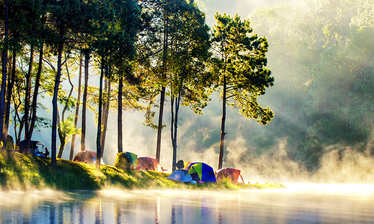
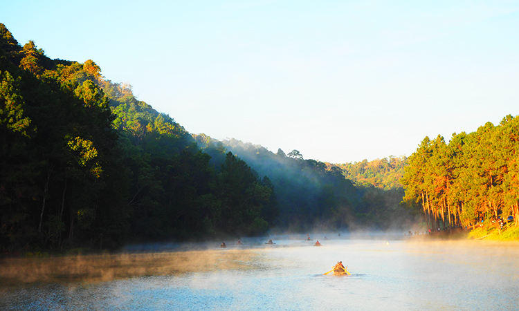
9. ดอยแม่อูคอ, แม่ฮ่องสอน (Doi Mae U-Kho, Mae Hong Son)
ฮิตที่ความสวยไม่เหมือนใครของทุ่งดอกบัวตองที่ใหญ่ที่สุดในไทย ขึ้นปกคลุมยอดเขาจนเหลืองอร่ามไปทั่ว
ทุ่งดอกบัวตองจะบานสะพรั่งในช่วงที่ลมหนาวเริ่มมาเยือนคือเดือนฤศจิกายน – ธันวาคม ของทุกปี
ถ้าขึ้นมาที่จุดชมวิวดอยแม่อูคอจะได้เห็นทิวทัศน์ของทุ่งดอกบัวตองแบบ 360 องศาเลยทีเดียว
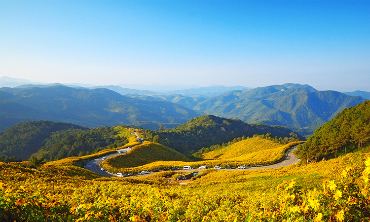
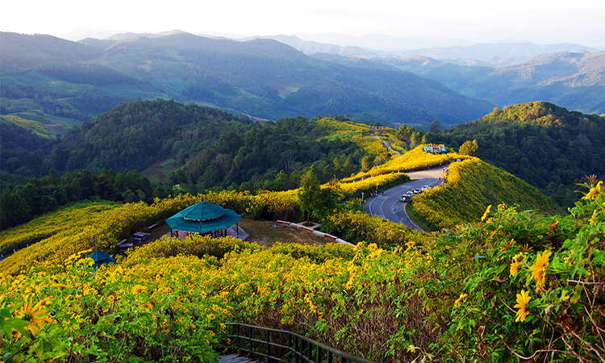
10. ดอยผาตั้ง, เชียงราย (Doi Pha Tang, Chiang Rai)
อีกหนึ่งสถานที่เที่ยวฮิตของจังหวัดเชียงราย ดอยผาตั้งเป็นจุดชมวิวพระอาทิตย์ขึ้นและทะเลหมอกยามเช้าที่สวยงามมากแห่งหนึ่ง
ที่จุดชมวิวช่องผาบ่องยังสามารถมองเห็นแม่น้ำโขงและเห็นยอดภูชี้ฟ้าที่อยู่ห่างออกไปราว 25 กิโลเมตรได้อีกด้วย
ในช่วงเดือนธันวาคมและมกราคมนอกจากจะได้สัมผัสอากาศเย็นๆ แล้วที่บริเวณยอดดอยจะได้เห็นดอกนางพญาเสือโคร่งสีชมพูบานสะพรั่งไปทั่ว
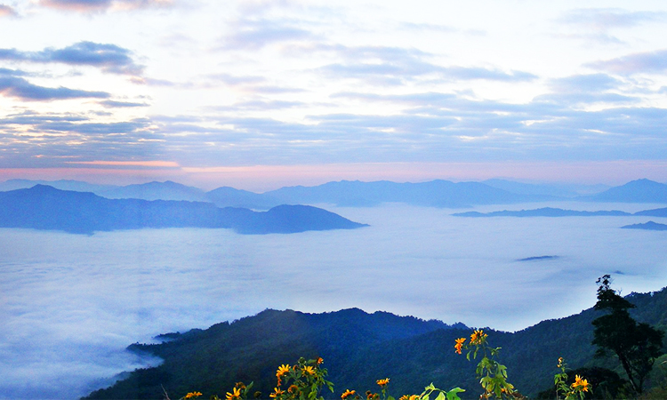
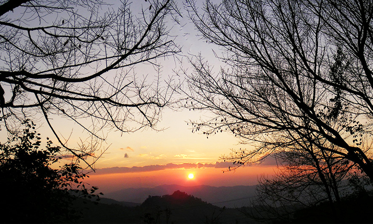
{% endblock %}